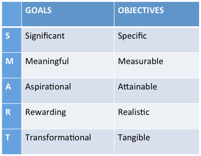

<div class='pages'>
  <section>
    <div>
      <p>
        What are the differences between goals and objectives? This is confusing to many people, and often used interchangeably, although by definition they are quite different. There’s no need to worry about this too much now, but it may be helpful to you to understand. Basically, goals are expansive and objectives are specific.
      </p>
    </div>
    <div class='row'>
      <div class='col-md-5'>
        
      </div>
      <div class='col-md-7'>
        <p>
          Examples of a personal goal and objective:
        </p>
        <p>
          <strong>GOAL:</strong> Become more aware of educational disparities in immigrant communities.
        </p>
        <p>
          <strong>OBJECTIVE:</strong> Provide children in an ESL classroom with an afterschool program that increases their homework completion.
        </p>
      </div>
    </div>
  </section>
</div>
